GRA: GR-Adam + synthetic tests#
project = GRA, host = chewie, device = cuda:1
Goals:#
device_idx = 1
device = f'cuda:{device_idx}'
print(f"device: {device} ——— host: {os.uname().nodename}")
device: cuda:1 ——— host: chewie
Main#
from optimizers import *
from test.test import *
def rosenbrock(x, y):
return (1 - x)**2 + 100 * (y - x**2)**2
def run_canyon_experiment(configs=None, steps=3_000):
print("\n=== Running Experiment 2: The Canyon (Rosenbrock) ===")
print("Hypothesis: Inertial Sourcing (True) traverses curved valleys faster than Gradient Sourcing (False).")
lr = 0.01
# Start at a tricky point (-2, 2) far from optimum (1, 1)
start_x, start_y = -2.0, 2.0
configs = configs or [
{"name": "Gradient Sourcing (Standard Adam)", "inertial": False, "coupling": float('inf'), "color": "blue"},
{"name": "RelAdam (C='inf',itertial)", "inertial": True, "coupling": float('inf'), "color": "red"},
{"name": "RelAdam (C=1.0,itertial)", "inertial": True, "coupling": 1.0, "color": "green"},
{"name": "RelAdam (C=2.0,grad^2)", "inertial": False, "coupling": 2.0, "color": "purple"},
]
plt.figure(figsize=(10, 8))
# Draw contours
x = torch.linspace(-2.5, 2.5, 100)
y = torch.linspace(-1, 3, 100)
X, Y = torch.meshgrid(x, y)
Z = rosenbrock(X, Y)
plt.contour(X, Y, Z, levels=torch.logspace(-1, 3, 20), cmap='Greys', alpha=0.6)
plt.plot(1, 1, 'r*', markersize=15, label='Global Min')
for cfg in configs:
p_x = torch.nn.Parameter(torch.tensor([start_x]))
p_y = torch.nn.Parameter(torch.tensor([start_y]))
# We perform ablation on `inertial_sourcing` ONLY.
# Coupling is set to infinity to isolate the effect of sourcing.
opt = RelativisticAdam(
[p_x, p_y],
lr=lr,
coupling=cfg['coupling'],
inertial_sourcing=cfg['inertial']
)
path_x, path_y = [], []
for i in range(steps):
opt.zero_grad()
loss = rosenbrock(p_x, p_y)
loss.backward()
opt.step()
path_x.append(p_x.item())
path_y.append(p_y.item())
plt.plot(path_x, path_y, label=cfg['name'], color=cfg['color'], alpha=0.6, linewidth=2)
print(f"{cfg['name']} Final Loss: {loss.item():.6f}")
plt.title("Trajectory Comparison: Inertial vs Gradient Sourcing")
plt.xlabel("x")
plt.ylabel("y")
plt.legend()
plt.grid(True, alpha=0.3)
plt.show()
run_canyon_experiment(steps=5000)
=== Running Experiment 2: The Canyon (Rosenbrock) ===
Hypothesis: Inertial Sourcing (True) traverses curved valleys faster than Gradient Sourcing (False).
Gradient Sourcing (Standard Adam) Final Loss: 0.301388
RelAdam (C='inf',itertial) Final Loss: 0.000088
RelAdam (C=1.0,itertial) Final Loss: 0.000226
RelAdam (C=2.0,grad^2) Final Loss: 0.103470
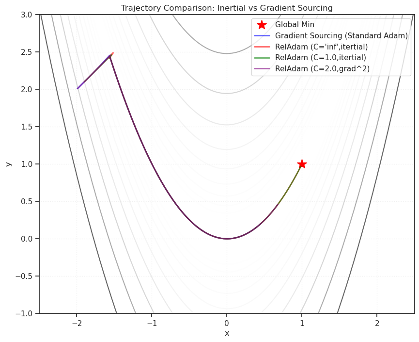
def run_heavy_tail_experiment_v2_synchronized():
print("\n=== Running Experiment 1 (Synchronized): Additive Shock Noise ===")
print("Hypothesis: Finite coupling (Relativistic) prevents 'Variance Poisoning' from outlier shocks.")
# 1. Setup parameters
dim = 1
steps = 1000
lr = 0.1
spike_prob = 0.01
spike_magnitude = 100.0
start_params = torch.tensor([10.0])
configs = [
{"name": "Standard Adam", "coupling": float('inf'), "inertial": False, "color": "gray", "ls": ":"},
{"name": "Inertial Adam (C=inf)", "coupling": float('inf'), "inertial": True, "color": "blue", "ls": "--"},
# Using C=0.5 as in your previous run for strong clipping effect
{"name": "Relativistic (C=0.5)", "coupling": 0.5, "inertial": True, "color": "red", "ls": "-"},
]
results = {}
# 2. Pre-generate spike schedule and noise vectors guarantees synchronization.
# Set seed once here for the whole experiment's noise generation.
torch.manual_seed(42)
spike_map = {}
dummy_grad = torch.zeros(dim) # Template for noise shape
print(f"Generating spikes...")
for i in range(steps):
# Decide if a spike happens at this step
if torch.rand(1).item() < spike_prob:
# Generate the exact noise vector for this step ahead of time
noise = torch.randn_like(dummy_grad)
# Normalize and scale to fixed magnitude
noise = noise / (noise.norm() + 1e-8) * spike_magnitude
spike_map[i] = noise
print(f" Spike scheduled at step {i}")
# 3. Run loop for each configuration
for cfg in configs:
print(f"Running configuration: {cfg['name']}")
# Reset model parameters to starting point
params = torch.nn.Parameter(start_params.clone())
opt = RelativisticAdam(
[params],
lr=lr,
coupling=cfg['coupling'],
inertial_sourcing=cfg['inertial']
)
losses = []
# Note: No need to set seed here anymore, as noise is pre-calculated.
for i in range(steps):
opt.zero_grad()
# Simple quadratic loss
loss = (params ** 2).sum()
loss.backward()
# --- Inject synchronized ADDITIVE noise ---
if i in spike_map:
with torch.no_grad():
# Add the pre-calculated noise vector specific to this step
params.grad.add_(spike_map[i])
# ------------------------------------------
opt.step()
losses.append(loss.item())
results[cfg['name']] = losses
# 4. Plotting
plt.figure(figsize=(12, 6))
for cfg in configs:
lw = 2 if cfg['coupling'] != float('inf') else 1.5
plt.plot(results[cfg['name']], label=cfg['name'], color=cfg['color'], linestyle=cfg['ls'], linewidth=lw)
plt.yscale('log')
plt.title("Impact of Synchronized Additive Gradient Shocks (Magnitude 100.0)")
plt.xlabel("Step")
plt.ylabel("Loss (Log Scale)")
plt.grid(True, alpha=0.3, which='both')
plt.legend()
# Add vertical lines to mark where spikes happened for clarity
for t in spike_map.keys():
plt.axvline(x=t, color='r', alpha=0.1, linestyle='-')
plt.show()
run_heavy_tail_experiment_v2_synchronized()
=== Running Experiment 1 (Synchronized): Additive Shock Noise ===
Hypothesis: Finite coupling (Relativistic) prevents 'Variance Poisoning' from outlier shocks.
Generating spikes...
Spike scheduled at step 29
Spike scheduled at step 46
Spike scheduled at step 70
Spike scheduled at step 129
Spike scheduled at step 216
Spike scheduled at step 217
Spike scheduled at step 259
Spike scheduled at step 263
Spike scheduled at step 311
Spike scheduled at step 334
Spike scheduled at step 431
Spike scheduled at step 547
Spike scheduled at step 638
Spike scheduled at step 685
Spike scheduled at step 736
Spike scheduled at step 753
Spike scheduled at step 952
Running configuration: Standard Adam
Running configuration: Inertial Adam (C=inf)
Running configuration: Relativistic (C=0.5)
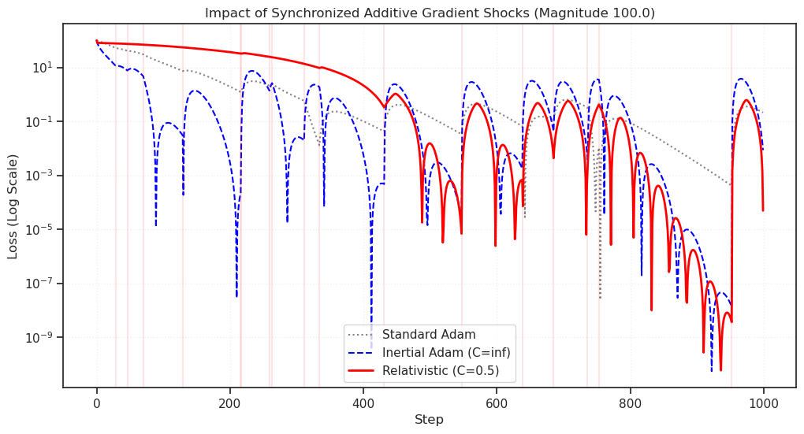
class CausalSelfAttention(nn.Module):
def __init__(self, n_embd, n_head, context_len):
super().__init__()
assert n_embd % n_head == 0
self.c_attn = nn.Linear(n_embd, 3 * n_embd)
self.c_proj = nn.Linear(n_embd, n_embd)
self.n_head = n_head
self.n_embd = n_embd
self.register_buffer("bias", torch.tril(torch.ones(context_len, context_len))
.view(1, 1, context_len, context_len))
def forward(self, x):
B, T, C = x.size()
q, k, v = self.c_attn(x).split(self.n_embd, dim=2)
q = q.view(B, T, self.n_head, C // self.n_head).transpose(1, 2)
k = k.view(B, T, self.n_head, C // self.n_head).transpose(1, 2)
v = v.view(B, T, self.n_head, C // self.n_head).transpose(1, 2)
att = (q @ k.transpose(-2, -1)) * (1.0 / math.sqrt(k.size(-1)))
att = att.masked_fill(self.bias[:,:,:T,:T] == 0, float('-inf'))
att = F.softmax(att, dim=-1)
y = att @ v
y = y.transpose(1, 2).contiguous().view(B, T, C)
return self.c_proj(y)
class Block(nn.Module):
def __init__(self, n_embd, n_head, context_len):
super().__init__()
self.ln1 = nn.LayerNorm(n_embd)
self.attn = CausalSelfAttention(n_embd, n_head, context_len)
self.ln2 = nn.LayerNorm(n_embd)
self.mlp = nn.Sequential(
nn.Linear(n_embd, 4 * n_embd),
nn.GELU(),
nn.Linear(4 * n_embd, n_embd),
)
def forward(self, x):
x = x + self.attn(self.ln1(x))
x = x + self.mlp(self.ln2(x))
return x
class MiniGPT(nn.Module):
def __init__(self, vocab_size, n_embd, n_head, n_layer, context_len):
super().__init__()
self.token_embedding = nn.Embedding(vocab_size, n_embd)
self.position_embedding = nn.Embedding(context_len, n_embd)
self.blocks = nn.Sequential(*[Block(n_embd, n_head, context_len) for _ in range(n_layer)])
self.ln_f = nn.LayerNorm(n_embd)
self.lm_head = nn.Linear(n_embd, vocab_size, bias=False)
self.context_len = context_len
def forward(self, idx, targets=None):
B, T = idx.shape
pos = torch.arange(0, T, dtype=torch.long, device=idx.device)
x = self.token_embedding(idx) + self.position_embedding(pos)
x = self.blocks(x)
x = self.ln_f(x)
logits = self.lm_head(x)
loss = None
if targets is not None:
B, T, C = logits.shape
logits = logits.view(B*T, C)
targets = targets.reshape(B*T)
loss = F.cross_entropy(logits, targets)
return logits, loss
import time
import math
def get_batch(split, batch_size=32, context_len=64, vocab_size=65):
# Generates synthetic "language-like" data to avoid downloads
# Pattern: [A, B, C, A, B, C ...] with random noise
data = torch.randint(0, vocab_size, (batch_size, context_len + 1))
# Make it learnable: Repeat patterns
for i in range(batch_size):
pattern = torch.randint(0, vocab_size, (8,)) # Pattern of length 8
for j in range(context_len + 1):
if torch.rand(1) > 0.1: # 90% chance to follow pattern
data[i,j] = pattern[j % 8]
x = data[:, :context_len]
y = data[:, 1:]
return x.to(device), y.to(device)
def run_transformer_experiment():
print("\n=== Experiment 3: The 'No-Warmup' Transformer Test ===")
print("Hypothesis: RelativisticAdam can survive high-LR initialization without warmup.")
# Model Config
vocab_size = 65
n_embd = 128
n_head = 4
n_layer = 4
context_len = 64
# Training Config
max_iters = 600
batch_size = 64
high_lr = 0.01 # Very aggressive for a Transformer
configs = [
{"name": "Standard Adam", "coupling": float('inf'), "inertial": False, "color": "gray", "ls": ":"},
# {"name": "Inertial Adam (C=inf)", "coupling": float('inf'), "inertial": True, "color": "blue", "ls": "--"},
{"name": "RelAdam (C=1.0)", "coupling": 1.0, "inertial": True, "color": "red", "ls": "-"},
{"name": "RelAdam (C=0.5)", "coupling": 0.5, "inertial": True, "color": "green", "ls": "--"},
]
results = {}
# Run comparison
for cfg in configs:
print(f"Training {cfg['name']}...")
torch.manual_seed(1337) # Same init for both
model = MiniGPT(vocab_size, n_embd, n_head, n_layer, context_len)
model = model.to(device)
opt = RelativisticAdam(
model.parameters(),
lr=high_lr,
weight_decay=1e-2,
coupling=cfg['coupling'],
inertial_sourcing=cfg['inertial'],
# betas=(0.8, 0.99),
)
losses = []
for iter in range(max_iters):
x, y = get_batch('train', batch_size, context_len, vocab_size)
# Forward
logits, loss = model(x, y)
# Backward
opt.zero_grad(set_to_none=True)
loss.backward()
# Optional: Gradient Clipping is usually standard for Transformers.
# We DISABLE it here to let RelAdam do the work.
# torch.nn.utils.clip_grad_norm_(model.parameters(), 1.0)
opt.step()
losses.append(loss.item())
if iter % 100 == 0:
print(f" Step {iter}: Loss {loss.item():.4f}")
results[cfg['name']] = losses
# Plot
plt.figure(figsize=(10, 6))
for cfg in configs:
# Smooth the curve slightly for readability
data = torch.tensor(results[cfg['name']])
smoothed = data.view(-1, 10).mean(dim=1)
plt.plot(torch.arange(len(smoothed))*10, smoothed, label=cfg['name'],
color=cfg['color'], linestyle=cfg['ls'], linewidth=2)
plt.title(f"Transformer Training Stability (High LR={high_lr}, No Warmup)")
plt.xlabel("Step")
plt.ylabel("Loss")
plt.legend()
plt.grid(True, alpha=0.3)
plt.show()
run_transformer_experiment()
=== Experiment 3: The 'No-Warmup' Transformer Test ===
Hypothesis: RelativisticAdam can survive high-LR initialization without warmup.
Training Standard Adam...
Step 0: Loss 4.3345
Step 100: Loss 1.2262
Step 200: Loss 1.2205
Step 300: Loss 1.2316
Step 400: Loss 1.2549
Step 500: Loss 1.2806
Training RelAdam (C=1.0)...
Step 0: Loss 4.3345
Step 100: Loss 1.2838
Step 200: Loss 1.2414
Step 300: Loss 1.2577
Step 400: Loss 1.2676
Step 500: Loss 1.3165
Training RelAdam (C=0.5)...
Step 0: Loss 4.3345
Step 100: Loss 1.4327
Step 200: Loss 1.2291
Step 300: Loss 1.2498
Step 400: Loss 1.2527
Step 500: Loss 1.3001
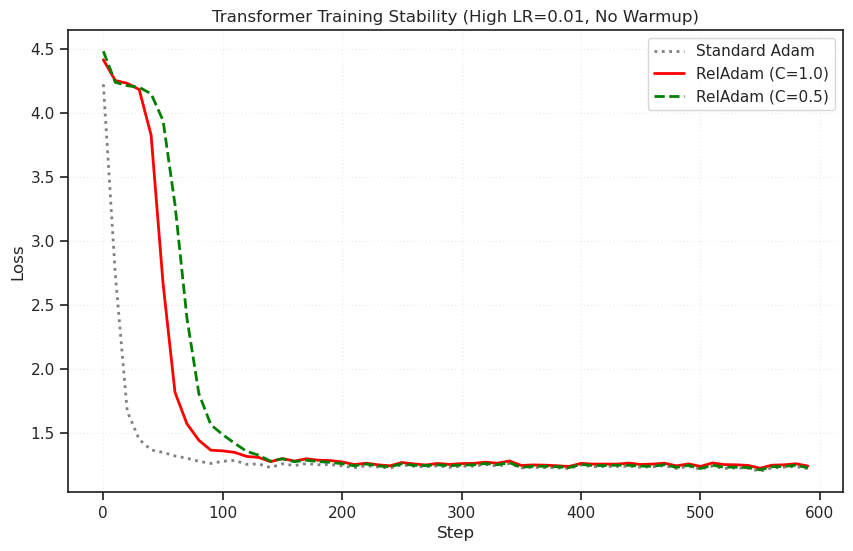
# ==========================================
# 2. Data: Shakespeare Snippet
# ==========================================
TEXT_DATA = """
To be, or not to be, that is the question:
Whether 'tis nobler in the mind to suffer
The slings and arrows of outrageous fortune,
Or to take arms against a sea of troubles
And by opposing end them. To die—to sleep,
No more; and by a sleep to say we end
The heart-ache and the thousand natural shocks
That flesh is heir to: 'tis a consummation
Devoutly to be wish'd. To die, to sleep;
To sleep, perchance to dream—ay, there's the rub:
For in that sleep of death what dreams may come,
When we have shuffled off this mortal coil,
Must give us pause—there's the respect
That makes calamity of so long life.
""" * 50 # Repeat to make dataset large enough
class CharLSTM(nn.Module):
def __init__(self, vocab_size, hidden_size=128, n_layers=2):
super().__init__()
self.embedding = nn.Embedding(vocab_size, hidden_size)
self.lstm = nn.LSTM(hidden_size, hidden_size, n_layers, batch_first=True)
self.fc = nn.Linear(hidden_size, vocab_size)
def forward(self, x, hidden):
x = self.embedding(x)
out, hidden = self.lstm(x, hidden)
out = self.fc(out) # Decode all time steps
return out, hidden
def run_lstm_experiment():
print("\n=== Real-World Test: The Exploding LSTM ===")
print("Hypothesis: RelAdam (Unclipped) matches Adam (Clipped) stability.")
# Data Prep
chars = sorted(list(set(TEXT_DATA)))
vocab_size = len(chars)
char_to_ix = {ch: i for i, ch in enumerate(chars)}
data_indices = [char_to_ix[ch] for ch in TEXT_DATA]
data_tensor = torch.tensor(data_indices, dtype=torch.long)
# Config
seq_len = 50 # Long enough to cause BPTT instability
batch_size = 32
n_batches = 500
hidden_size = 128
# We use a HIGH LR to provoke explosions
lr = 0.01
configs = [
{"name": "Adam (Unclipped)", "opt": "Adam", "clip": None, "color": "gray", "ls": ":"},
{"name": "Adam (Clipped=1.0)", "opt": "Adam", "clip": 1.0, "color": "blue", "ls": "--"},
{"name": "RelAdam (C=1.0)", "opt": "RelAdam", "clip": None, "color": "red", "ls": "-"},
]
results = {}
for cfg in configs:
print(f"Running {cfg['name']}...")
torch.manual_seed(42)
model = CharLSTM(vocab_size, hidden_size).to(device)
# Select Optimizer
if cfg["opt"] == "Adam":
optimizer = torch.optim.Adam(model.parameters(), lr=lr)
else:
# Note: Inertial Sourcing=True + Coupling=1.0 is the "Robust" config
optimizer = RelativisticAdam(
model.parameters(), lr=lr,
coupling=1.0,
inertial_sourcing=True,
betas=(0.9, 0.999),
)
losses = []
hidden = None
for i in range(n_batches):
# Random batch sampling
starts = torch.randint(0, len(data_tensor) - seq_len - 1, (batch_size,))
x_batch = torch.stack([data_tensor[s : s+seq_len] for s in starts])
y_batch = torch.stack([data_tensor[s+1 : s+seq_len+1] for s in starts])
x_batch = x_batch.to(device)
y_batch = y_batch.to(device)
# Forward
# Detach hidden state to simulate truncated BPTT, but instability remains within the sequence
out, _ = model(x_batch, None)
# Reshape for loss
loss = torch.nn.functional.cross_entropy(out.view(-1, vocab_size), y_batch.view(-1))
optimizer.zero_grad()
loss.backward()
# --- The Crucial Difference ---
if cfg["clip"] is not None:
torch.nn.utils.clip_grad_norm_(model.parameters(), cfg["clip"])
# ------------------------------
optimizer.step()
losses.append(loss.item())
results[cfg['name']] = losses
# Plot
plt.figure(figsize=(10, 6))
for cfg in configs:
# Simple smoothing
data = torch.tensor(results[cfg['name']])
if len(data) > 0:
smoothed = data.view(-1, 5).mean(dim=1)
plt.plot(torch.arange(len(smoothed))*5, smoothed, label=cfg['name'],
color=cfg['color'], linestyle=cfg['ls'], linewidth=2)
plt.title("LSTM Training Stability (High LR=0.01)")
plt.xlabel("Step")
plt.ylabel("Loss")
plt.legend()
plt.grid(True, alpha=0.3)
plt.show()
return results
results = run_lstm_experiment()
=== Real-World Test: The Exploding LSTM ===
Hypothesis: RelAdam (Unclipped) matches Adam (Clipped) stability.
Running Adam (Unclipped)...
Running Adam (Clipped=1.0)...
Running RelAdam (C=1.0)...
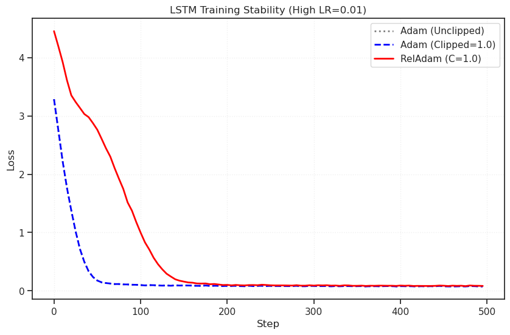
list(results)
['Adam (Unclipped)', 'Adam (Clipped=1.0)', 'RelAdam (C=1.0)']
plot(results['Adam (Clipped=1.0)'])
[<matplotlib.lines.Line2D at 0x73a45045a350>]
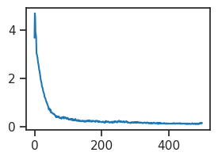
def generate_data(
n_samples=200,
outlier_ratio=0.1,
outlier_magnitude_min=2.0,
outlier_magnitude_max=8.0, ):
# True function: y = sin(3x)
x = torch.linspace(-3, 3, n_samples).unsqueeze(1)
y = torch.sin(3 * x)
# Add small background noise
y = y + torch.randn_like(y) * 0.1
# Add outliers
n_outliers = int(n_samples * outlier_ratio)
indices = torch.randperm(n_samples)[:n_outliers]
# Random sign (+/- 1)
sign = (torch.randint(0, 2, (n_outliers, 1), device=y.device).float() * 2 - 1)
# Magnitude sampled uniformly in [min, max]
mag = torch.empty((n_outliers, 1), device=y.device).uniform_(
float(outlier_magnitude_min), float(outlier_magnitude_max)
)
y[indices] = y[indices] + sign * mag
return x, y, indices
def compute_r2(true, pred):
ss_res = (true - pred).pow(2)
ss_tot = (true - true.mean()).pow(2)
ss_res = torch.sum(ss_res)
ss_tot = torch.sum(ss_tot)
# compute r2
eps = torch.finfo(torch.float32).eps
r2 = 1.0 - ss_res / (ss_tot + eps)
return r2
def run_coupling_ablation(
n_steps=10000,
n_samples=100,
outlier_ratio=0.15,
outlier_mag_max=5.0,
couplings=None,
lr=0.01, ):
print("\n=== Experiment 4: Coupling Ablation (Robust Regression) ===")
# print("Hypothesis: C ~ 1.0 filters outliers best. C=inf overfits them. C=0.1 learns too slow.")
# Data
x_train, y_train, outlier_idx = generate_data(
n_samples=n_samples,
outlier_ratio=outlier_ratio,
outlier_magnitude_max=outlier_mag_max,
outlier_magnitude_min=2.0,
)
# "Clean" test set (ground truth) to measure true performance
x_test = torch.linspace(-3, 3, 200).unsqueeze(1)
y_test = torch.sin(3 * x_test)
# Configs to test
couplings = couplings or [1e-4, 1e-3, 1e-2, 0.05, 0.1, 1.0, 5.0, float('inf')]
colors = list(sns.color_palette('tab10', n_colors=len(couplings)))
labels = [f'C={str(c)}' for c in couplings]
plt.figure(figsize=(20, 9))
# Subplot 1: The fitted curves
plt.subplot(1, 2, 1)
plt.scatter(x_train, y_train, c='gray', alpha=0.3, label='Noisy Data')
plt.scatter(x_train[outlier_idx], y_train[outlier_idx], c='black', marker='x', label='Outliers')
plt.plot(x_test, y_test, 'k--', linewidth=1, label='True Function')
# x_train = x_train.to(device)
# y_train = y_train.to(device)
# x_test = x_test.to(device)
# y_test = y_test.to(device)
results = {}
for i, C in enumerate(couplings):
# Simple MLP
model = nn.Sequential(
nn.Linear(1, 512),
nn.SiLU(),
nn.Linear(512, 512),
nn.SiLU(),
nn.Linear(512, 1)
) # .to(device)
# Note: inertial_sourcing=False matches Adam exactly when C=inf
opt = RelativisticAdam(
model.parameters(),
lr=lr,
coupling=C,
inertial_sourcing=False,
weight_decay=1e-4,
)
losses = []
test_errors = []
for step in range(n_steps):
# Full batch gradient descent
y_pred = model(x_train)
loss = nn.MSELoss()(y_pred, y_train)
opt.zero_grad()
loss.backward()
opt.step()
# Evaluate on clean data
with torch.no_grad():
test_pred = model(x_test)
test_mse = nn.MSELoss()(test_pred, y_test)
test_errors.append(test_mse.item())
# Plot final curve
with torch.no_grad():
final_pred = model(x_test)
plt.plot(x_test, final_pred, color=colors[i], linewidth=2, label=labels[i])
results[labels[i]] = test_errors
test_r = sp_stats.pearsonr(tonp(y_test.squeeze()), tonp(final_pred.squeeze())).statistic
test_r2 = compute_r2(true=y_test, pred=final_pred)
if test_r2 < 0:
r2_str = 'N/A'
else:
r2_str = f"{np.round(test_r2 * 100)} %"
print(f"C={C} done...\t final test MSE = {test_mse.item():0.3f} ——— r: {test_r:0.2f} r2: {r2_str}")
plt.title("Final Model Fits vs. Outliers")
plt.legend()
# plt.ylim(-2.5, 2.5) # Zoom in to see the fit, ignore outlier range
# Subplot 2: Test Error Curves
plt.subplot(1, 2, 2)
for label, errors in results.items():
# Smoothing
smoothed = torch.tensor(errors).view(-1, 10).mean(dim=1)
plt.plot(smoothed, label=label, linewidth=2)
plt.yscale('log')
plt.title("Clean Test Set Error (Convergence)")
plt.xlabel("Step (x10)")
plt.ylabel("MSE on True Function")
plt.legend()
plt.grid(True, alpha=0.3)
plt.tight_layout()
plt.show()
return results
%%time
couplings = [1e-4, 1e-3, 1e-2, 1.0, 100, float('inf')]
results2 = run_coupling_ablation(
n_samples=300,
outlier_ratio=0.1,
outlier_mag_max=5.0,
couplings=couplings,
n_steps=30_000,
lr=0.01,
)
=== Experiment 4: Coupling Ablation (Robust Regression) ===
C=0.0001 done... final test MSE = 0.029 ——— r: 0.98 r2: 94.0 %
C=0.001 done... final test MSE = 0.094 ——— r: 0.93 r2: 82.0 %
C=0.01 done... final test MSE = 0.112 ——— r: 0.93 r2: 78.0 %
C=1.0 done... final test MSE = 0.368 ——— r: 0.79 r2: 29.0 %
C=100 done... final test MSE = 0.279 ——— r: 0.82 r2: 46.0 %
C=inf done... final test MSE = 0.235 ——— r: 0.84 r2: 55.0 %
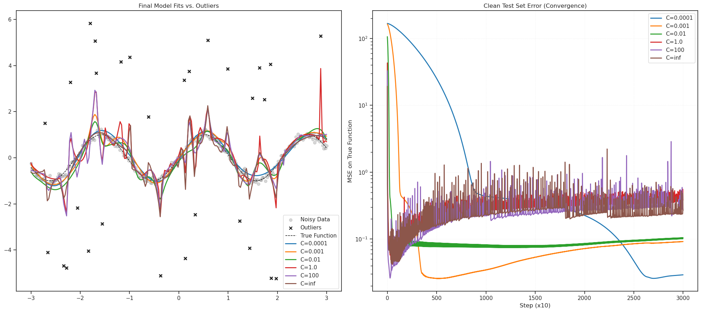
CPU times: user 3h 34min 49s, sys: 5.63 s, total: 3h 34min 55s
Wall time: 6min 43s
%%time
results = run_coupling_ablation(
n_samples=300,
outlier_ratio=0.10,
outlier_mag_max=8.0,
n_steps=100_000,
)
=== Experiment 4: Coupling Ablation (Robust Regression) ===
Hypothesis: C ~ 1.0 filters outliers best. C=inf overfits them. C=0.1 learns too slow.
Training with Coupling C=0.0001...
Training with Coupling C=0.001...
Training with Coupling C=0.01...
Training with Coupling C=0.05...
Training with Coupling C=0.1...
Training with Coupling C=1.0...
Training with Coupling C=5.0...
Training with Coupling C=inf...
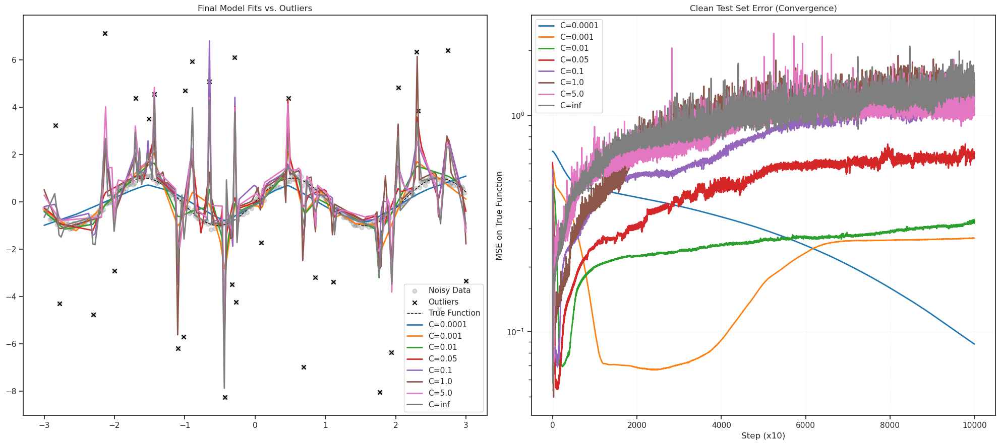
CPU times: user 5h 55min 1s, sys: 9.54 s, total: 5h 55min 10s
Wall time: 11min 6s
%%time
results = run_coupling_ablation(
n_samples=500,
outlier_ratio=0.20,
outlier_mag_max=8.0,
n_steps=100_000,
)
=== Experiment 4: Coupling Ablation (Robust Regression) ===
Hypothesis: C ~ 1.0 filters outliers best. C=inf overfits them. C=0.1 learns too slow.
Training with Coupling C=0.0001...
Training with Coupling C=0.001...
Training with Coupling C=0.01...
Training with Coupling C=0.05...
Training with Coupling C=0.1...
Training with Coupling C=1.0...
Training with Coupling C=5.0...
Training with Coupling C=inf...
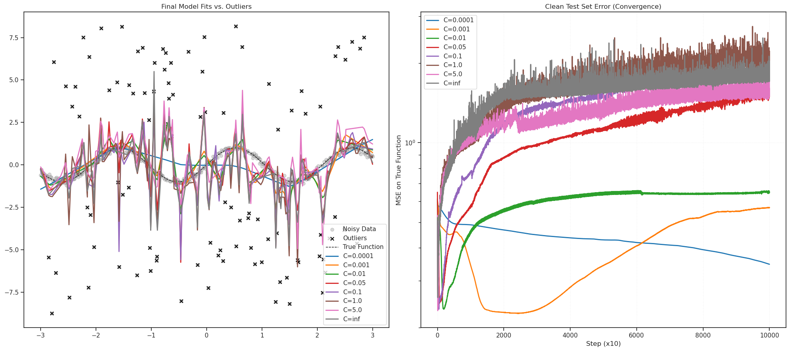
CPU times: user 6h 34min 23s, sys: 10.7 s, total: 6h 34min 34s
Wall time: 12min 20s
%%time
couplings = [1e-4, 1e-3, 1e-2, 1.0, 100, float('inf')]
results = run_coupling_ablation(
n_samples=500,
outlier_ratio=0.20,
outlier_mag_max=8.0,
couplings=couplings,
n_steps=100_000,
)
=== Experiment 4: Coupling Ablation (Robust Regression) ===
Hypothesis: C ~ 1.0 filters outliers best. C=inf overfits them. C=0.1 learns too slow.
Training with Coupling C=0.0001...
Training with Coupling C=0.001...
Training with Coupling C=0.01...
Training with Coupling C=1.0...
Training with Coupling C=100...
Training with Coupling C=inf...
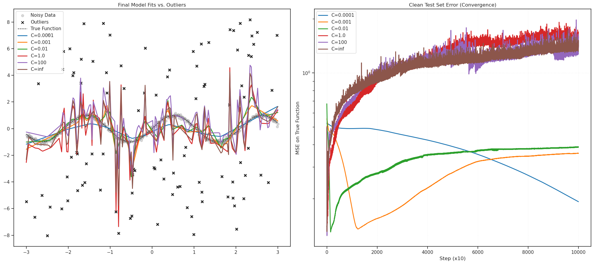
CPU times: user 6h 8min 11s, sys: 12.6 s, total: 6h 8min 24s
Wall time: 11min 32s
%%time
couplings = [1e-4, 1e-3, 1e-2, 1.0, 100, float('inf')]
results = run_coupling_ablation(
n_samples=300,
outlier_ratio=0.10,
outlier_mag_max=10.0,
couplings=couplings,
n_steps=10_000,
lr=0.01,
)
=== Experiment 4: Coupling Ablation (Robust Regression) ===
Hypothesis: C ~ 1.0 filters outliers best. C=inf overfits them. C=0.1 learns too slow.
Training with Coupling C=0.0001...
Training with Coupling C=0.001...
Training with Coupling C=0.01...
Training with Coupling C=1.0...
Training with Coupling C=100...
Training with Coupling C=inf...
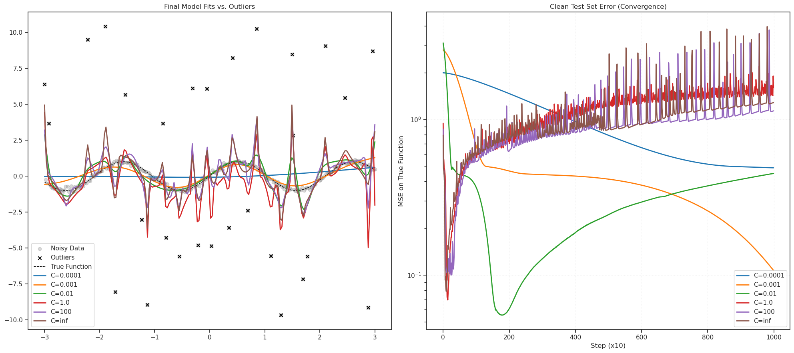
CPU times: user 48min 38s, sys: 2 s, total: 48min 40s
Wall time: 1min 31s
%%time
couplings = [1e-4, 1e-3, 1e-2, 1.0, 100, float('inf')]
results = run_coupling_ablation(
n_samples=300,
outlier_ratio=0.10,
outlier_mag_max=10.0,
couplings=couplings,
n_steps=1000_000,
lr=0.01,
)
=== Experiment 4: Coupling Ablation (Robust Regression) ===
Hypothesis: C ~ 1.0 filters outliers best. C=inf overfits them. C=0.1 learns too slow.
Training with Coupling C=0.0001...
Training with Coupling C=0.001...
Training with Coupling C=1.0...
Training with Coupling C=100...
Training with Coupling C=inf...
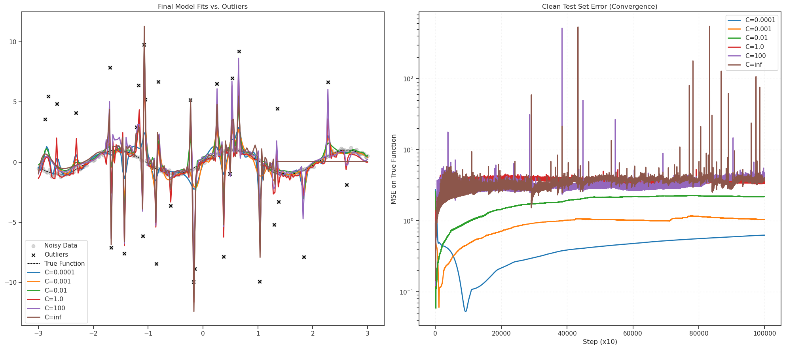
CPU times: user 4d 23h 9min 40s, sys: 2min 52s, total: 4d 23h 12min 33s
Wall time: 3h 47min 1s
Lion family#
def run_coupling_ablation(
n_steps=10000,
n_samples=100,
outlier_ratio=0.15,
outlier_mag_max=5.0,
masses=None,
lr=0.01, ):
print("\n=== Rel. Signum Mass Ablation (Robust Regression) ===")
# print("Hypothesis: C ~ 1.0 filters outliers best. C=inf overfits them. C=0.1 learns too slow.")
# Data
x_train, y_train, outlier_idx = generate_data(
n_samples=n_samples,
outlier_ratio=outlier_ratio,
outlier_magnitude_max=outlier_mag_max,
outlier_magnitude_min=2.0,
)
# "Clean" test set (ground truth) to measure true performance
x_test = torch.linspace(-3, 3, 200).unsqueeze(1)
y_test = torch.sin(3 * x_test)
# Configs to test
masses = masses or [1e-4, 1e-2, 1.0, 50.0, 100, 1000]
colors = list(sns.color_palette('tab10', n_colors=len(masses)))
labels = [f'M={str(m)}' for m in masses]
plt.figure(figsize=(20, 9))
# Subplot 1: The fitted curves
plt.subplot(1, 2, 1)
plt.scatter(x_train, y_train, c='gray', alpha=0.3, label='Noisy Data')
plt.scatter(x_train[outlier_idx], y_train[outlier_idx], c='black', marker='x', label='Outliers')
plt.plot(x_test, y_test, 'k--', linewidth=1, label='True Function')
# x_train = x_train.to(device)
# y_train = y_train.to(device)
# x_test = x_test.to(device)
# y_test = y_test.to(device)
results = {}
for i, mass in enumerate(masses):
# Simple MLP
model = nn.Sequential(
nn.Linear(1, 128),
nn.SiLU(),
nn.Linear(128, 128),
nn.SiLU(),
nn.Linear(128, 1)
) # .to(device)
# Note: inertial_sourcing=False matches Adam exactly when C=inf
opt = RelativisticSignum(
model.parameters(),
lr=lr,
mass=mass,
momentum=0.9,
weight_decay=1e-4,
)
losses = []
test_errors = []
for step in range(n_steps):
# Full batch gradient descent
y_pred = model(x_train)
loss = nn.MSELoss()(y_pred, y_train)
opt.zero_grad()
loss.backward()
opt.step()
# Evaluate on clean data
with torch.no_grad():
test_pred = model(x_test)
test_mse = nn.MSELoss()(test_pred, y_test)
test_errors.append(test_mse.item())
# Plot final curve
with torch.no_grad():
final_pred = model(x_test)
plt.plot(x_test, final_pred, color=colors[i], linewidth=2, label=labels[i])
results[labels[i]] = test_errors
test_r = sp_stats.pearsonr(tonp(y_test.squeeze()), tonp(final_pred.squeeze())).statistic
test_r2 = compute_r2(true=y_test, pred=final_pred)
if test_r2 < 0:
r2_str = 'N/A'
else:
r2_str = f"{np.round(test_r2 * 100)} %"
print(f"M={mass} done...\t final test MSE = {test_mse.item():0.3f} ——— r: {test_r:0.2f} r2: {r2_str}")
plt.title("Final Model Fits vs. Outliers")
plt.legend()
# plt.ylim(-2.5, 2.5) # Zoom in to see the fit, ignore outlier range
# Subplot 2: Test Error Curves
plt.subplot(1, 2, 2)
for label, errors in results.items():
# Smoothing
smoothed = torch.tensor(errors).view(-1, 10).mean(dim=1)
plt.plot(smoothed, label=label, linewidth=2)
plt.yscale('log')
plt.title("Clean Test Set Error (Convergence)")
plt.xlabel("Step (x10)")
plt.ylabel("MSE on True Function")
plt.legend()
plt.grid(True, alpha=0.3)
plt.tight_layout()
plt.show()
return results
%%time
masses = [0.0, 1e-2, 1.0, 50.0, 100, 1000, 1e5]
results2 = run_coupling_ablation(
n_samples=100,
outlier_ratio=0.1,
outlier_mag_max=10.0,
masses=masses,
n_steps=10_000,
lr=0.01,
)
=== Rel. Signum Mass Ablation (Robust Regression) ===
M=0.0 done... final test MSE = 0.661 ——— r: 0.50 r2: N/A
M=0.01 done... final test MSE = 1.771 ——— r: 0.56 r2: N/A
M=1.0 done... final test MSE = 2.331 ——— r: 0.45 r2: N/A
M=50.0 done... final test MSE = 1.667 ——— r: 0.45 r2: N/A
M=100 done... final test MSE = 1.212 ——— r: 0.52 r2: N/A
M=1000 done... final test MSE = 0.321 ——— r: 0.67 r2: 38.0 %
M=100000.0 done... final test MSE = 0.554 ——— r: 0.29 r2: N/A
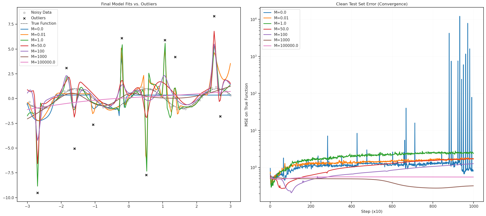
CPU times: user 27min 55s, sys: 1.37 s, total: 27min 57s
Wall time: 52.8 s